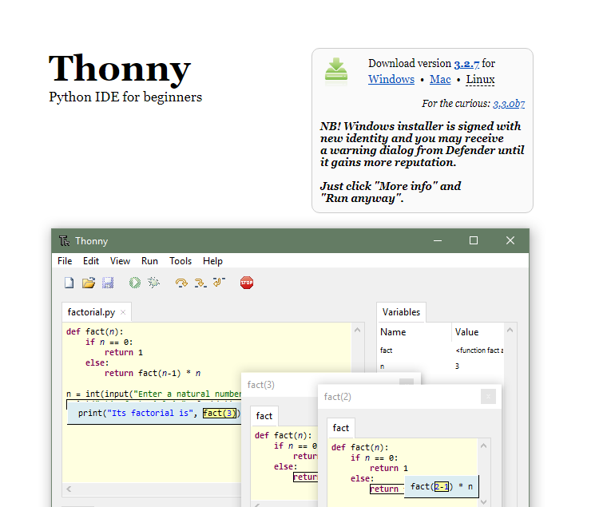
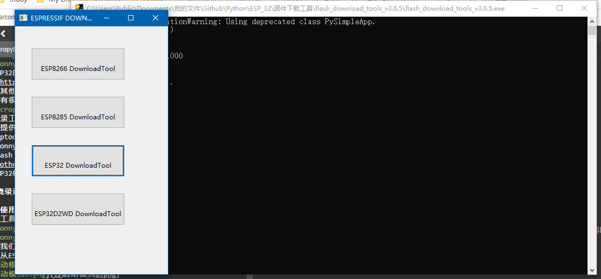
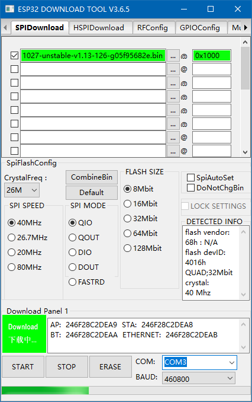
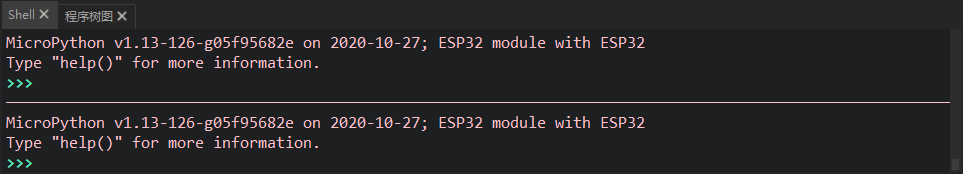

ESP32_micropython固件烧录
ESP32_micropython 固件烧录
烧录准备
1.micropython IDE：Thonny

2.ESP32 的 micropython 固件：戳我进下载页面，micropython 还支持其他芯片link，下载页面有很多固件选择，由于我的是不带 SPIRAM 的，因此我选择了第一个。

3.烧录工具：
这里提供两种，esptool 在 GitHub 上有教程，这里就不细讲。
esptool：github link
Thonny: micropython IDE
Flash 下载工具：link

4.ESP32 模组
烧录过程
使用 Thonny 烧录
点击工具栏运行，选择“选择解释器…”


选择我们在 Micropython 官网下载的固件后点击 install
这是从 ESP 官网上下载的启动模式方法：


即GPIO0和GPIO2全部接地，同时按下复位按键，保持1毫秒再断开GPIO0断开接地（因为 GPIO0 默认上拉），便开始下载。
使用 Flash 下载工具
从官网下载了工具后双击打开，等待几秒后，点击 ESP32downloadTools，选择我们在 Micropython 官网下载的固件后点击 START


再按照上文中的启动方法启动即可下载。
成功之后 shell 会出现下图：

像 python 一样可以实时输入，ESP32 可以直接看到 LED 灯被点亮
本博客所有文章除特别声明外，均采用 CC BY-NC-SA 4.0 许可协议。转载请注明来自 三白！


评论